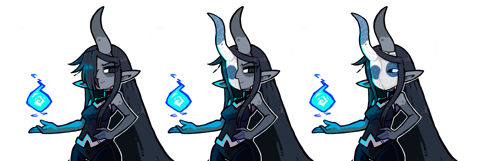

Narímine
Narímine la gris es la creadora y primera usuaria de la fuerza de manipulacion universal conocida como la Magh.
Nombre: Narímine
Titulos: Líder de los Hechiceros Reales, Consejera de la Gran Reina Roja
Especie: Elfo gris
Género: Femenino
Pasado conquistador
Antes de servir a Lith, Narímine fue una guerrera conquistadora.
Usando su fuego y un ejército numeroso, unificó bajo su estandarte casi la mitad del continente donde nació.
Antes de conocer a la gran reina roja Narímine estaba convencida de ser la criatura más poderosa de el mundo y que gobernar era su derecho natural.
La máscara
Narímine utiliza una máscara compuesta por dos mitades independientes, puede usar solo una para ocultar el lado de su rostro cubierto con cicatrizes o unir ambas para formar una máscara completa cuando entra en misiones, busca intimidar, o necesita ocultar por completo gestos y emociones.
Cuando no usa su mascara Narímine suele ocultar la mitad de su rostro con su cabello, solo las personas que ganan cierto nivel de su confianza llegan a ver su rostro completo.
Galeria
Narimine the Grey is the creator and first user of the universal manipulation force known as the Magh.
Name: Narimine
Titles: Leader of the Royal Sorcerers, Advisor to the Great Red Queen
Especies: Grey Elf
Gender: Female
Conqueror's Past
Before serving Lith, Narimine was a conquering warrior.
Using her fire and a large army, she unified nearly half of the continent where she was born under her banner.
Before meeting the great red queen, Narimine was convinced she was the most powerful creature in the world and that ruling was her natural right.
The Mask
Narímine uses a mask composed of two independent halves; she can use only one to hide the side of her face covered with scars or join both together to form a complete mask when she goes on missions, seeks to intimidate, or needs to completely hide gestures and emotions.
When she is not wearing her mask, Narímine usually hides half of her face with her hair; only people who gain a certain level of her trust get to see her full face.